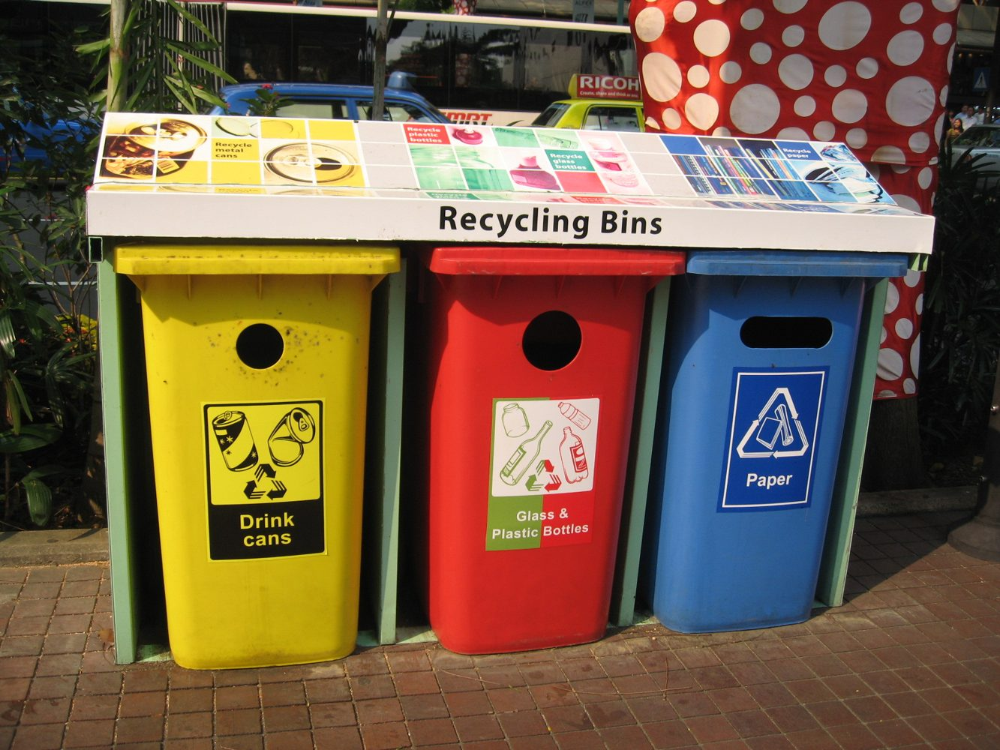
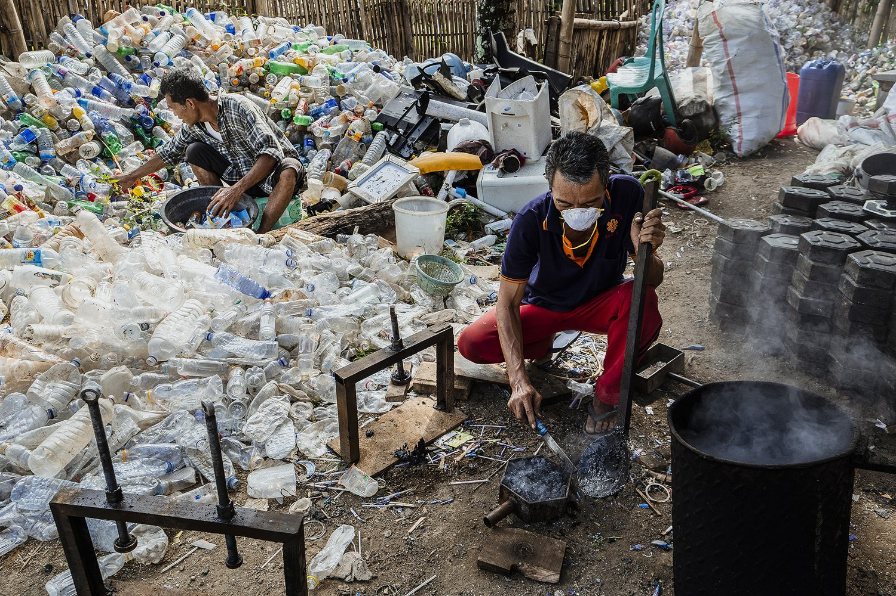

O
Organik
Sisa makanan, daun, dan bahan alami. Kurangi kadar air, pisahkan dari plastik, lalu arahkan ke kompos.
Halaman edukasi dibuat agar pengguna memahami kategori sampah, langkah pemilahan, dan kebiasaan sederhana yang dapat dilakukan sebelum sampah meninggalkan rumah.

Gunakan tombol kategori untuk melihat contoh material dan perlakuan awal sebelum disetorkan atau dibuang.
Sisa makanan, daun, dan bahan alami. Kurangi kadar air, pisahkan dari plastik, lalu arahkan ke kompos.
Botol PET dan galon sekali pakai perlu dikosongkan, dibilas, dan dipipihkan agar mudah ditimbang.
Simpan dalam kondisi kering. Pisahkan dari sisa makanan agar kualitas material tetap baik.
Popok, tisu kotor, puntung rokok, dan kemasan sulit daur ulang perlu dipisah agar tidak mencemari material bernilai.
Kantong, sachet, dan plastik tipis perlu dikumpulkan terpisah karena jalur pengolahannya berbeda dari PET.
Jangan dibuang ke saluran air. Simpan dalam wadah tertutup dan setor ke pengumpul khusus.

Pemilahan yang benar membuat material lebih mudah diproses menjadi produk baru.
Buang sisa isi kemasan agar tidak mengundang bau dan hama.
Bilas seperlunya untuk plastik, botol, dan kaleng yang masih bernilai.
Gunakan wadah berbeda untuk organik, daur ulang, dan residu.
Salurkan material bernilai ke bank sampah atau mitra pengolah.